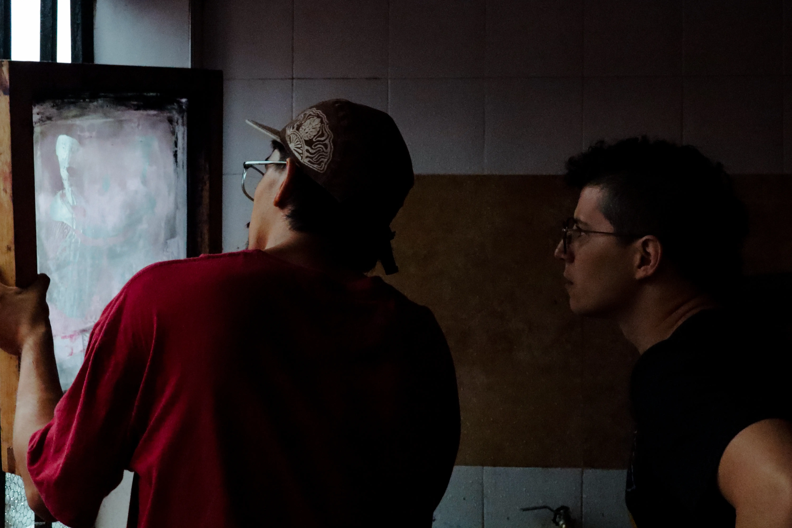
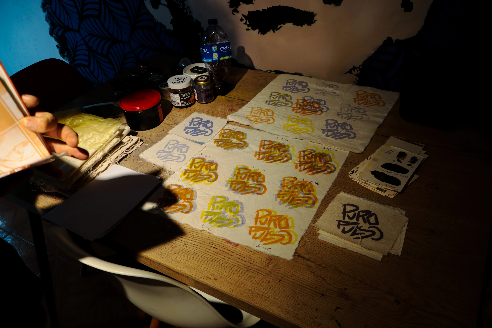
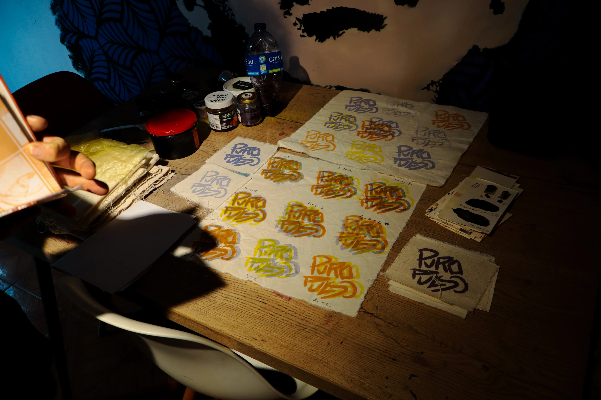
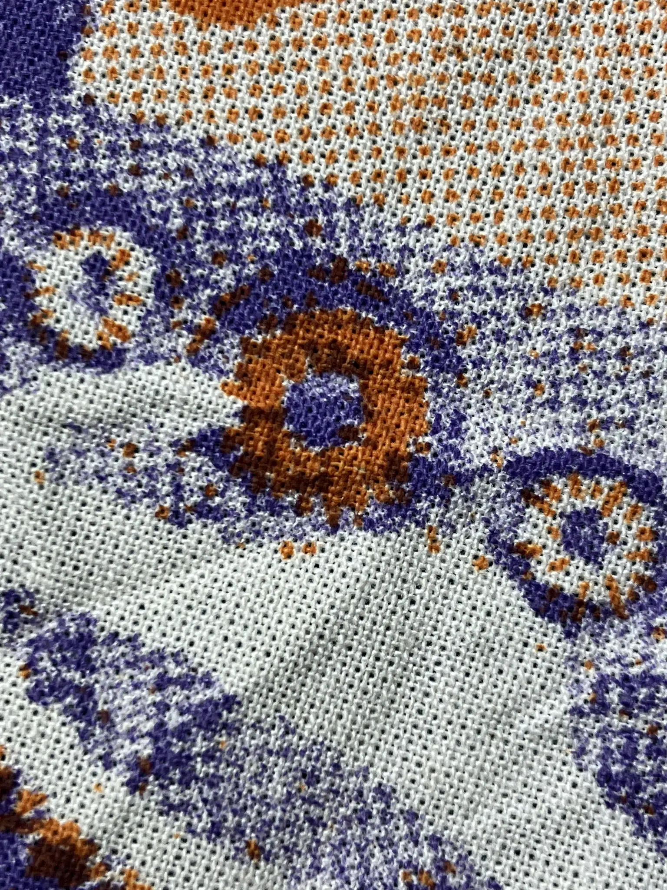
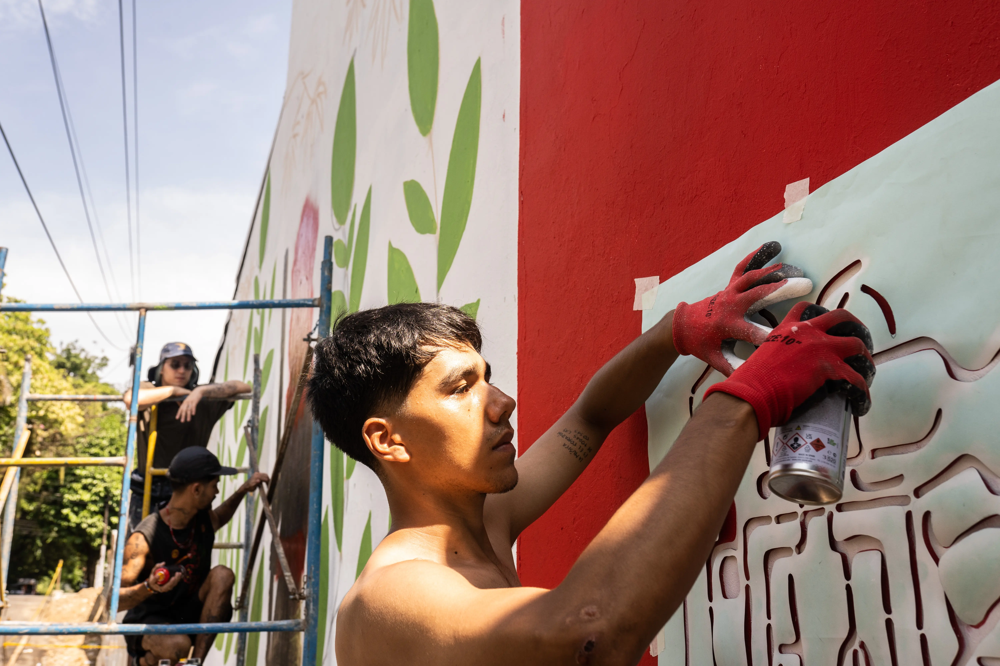

Andres Felipe Peña
Andrés es un artista visual, grafitero y muralista, estudiante de Ingeniería de Sistemas. Su trabajo explora la intersección entre arte, impresión análoga y procesos comunitarios, inspirado en la Amazonia colombiana. Desde 2021 desarrolla un aprendizaje empírico en artes gráficas, creando murales, serigrafías y talleres con jóvenes y comunidades víctimas del conflicto. Colabora con colectivos como Caldera Gráfica Crew y Nonuya, experimentando con paredes, tintes, papeles, textiles y medios digitales para generar diálogos sobre territorio y diversidad como formas de conservación.
Educación / Reconocimientos
- • Universidad de la Amazonia, Florencia Caquetá. Ingeniería de Sistemas
(activa).
- • 2024, Vist projects, Florencia Caquetá. Taller de formación colectiva La
Amazonia es Aquí.
- • 2024, Agua Bonita, Caquetá. Artista invitado del Séptimo festival “Agua
bonita se pinta de colores“.
- • 2025, Conformación de espacio creativo "Puro Pulso" orientado a fomentar
artes
impresas análogas en el Caquetá.




